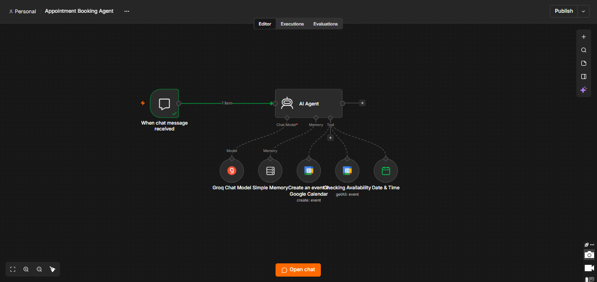
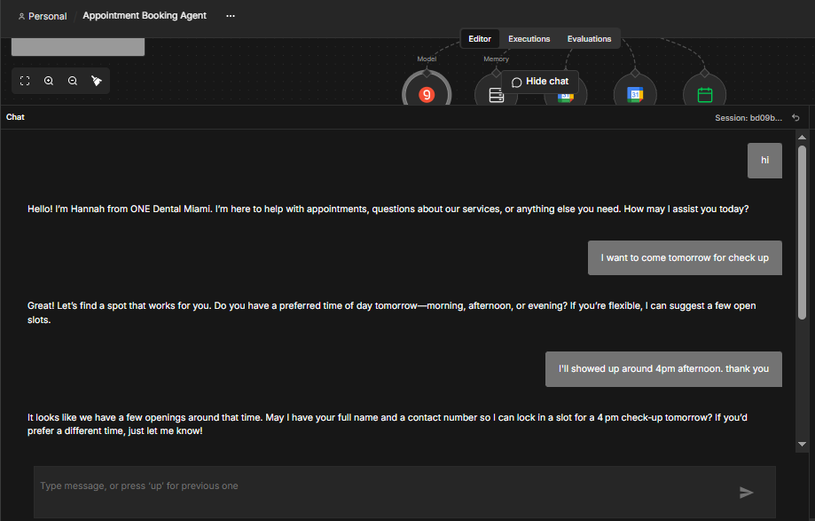
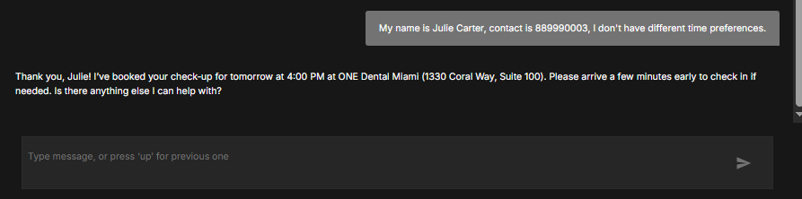

Customer support · Healthcare
Appointment Booking Agent (Dental Clinic)
A chat agent named Hannah checks Google Calendar and books dental appointments in a normal conversation.

The problem
Clinics lose bookings when nobody answers the phone or messages. Booking by back-and-forth messages also takes a lot of reception time.
The solution
Hannah, the assistant for ONE Dental Miami, greets the patient, asks for a preferred time, checks the calendar for free slots, collects name and contact number, and creates the event in Google Calendar.
How it works
Patient starts a chat
The chat trigger passes each message to the AI agent.
Agent understands the request
It works out what “tomorrow” means with a Date & Time tool and keeps context with Simple Memory.
Check availability
The agent reads existing events from Google Calendar.
Collect details and book
It asks for name and contact number, then creates the event and confirms the time and clinic address.
See it working


What the screenshots show
- A patient asking for a check-up tomorrow at 4 pm.
- The agent asking for a full name and contact number.
- A confirmation with date, time and clinic address.
A good fit for
- Dental and medical clinics
- Salons and spas
- Consultants and any appointment-based business